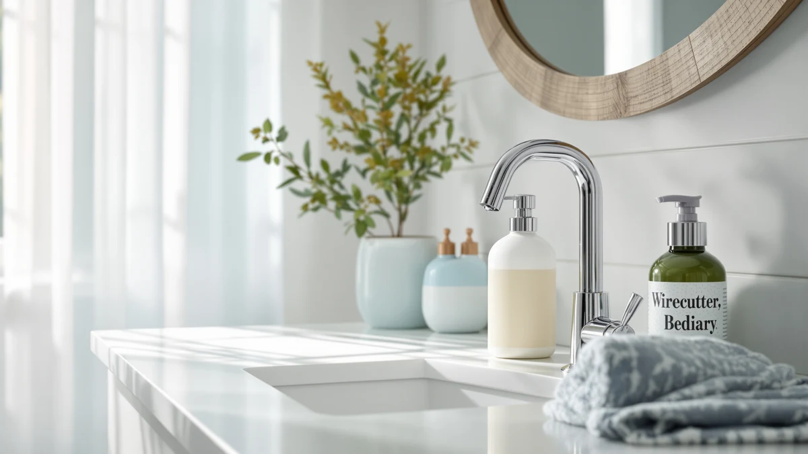

4 Pack Commercial Soap Review (2026): Worth It?
Prices and picks verified as of September 2026. Independent, reader-supported reviews.


Quick Answer
For a 4-pack commercial soap dispenser, the HGQiviut wall-mount is the pick most buyers land on: four rust-proof stainless steel pumps for $64.99, each holding 1000 ml and refilling from the top. If you'd rather skip the manual pump, the AIKE and PZOTRUF automatic dispensers below are the better fit for touch-free use, and the simplehuman is the upgrade pick for a single high-end sink.
Our pick: 4 Pack Commercial Soap Dispenser, $64.99 Check Price on Amazon
Bottom line: our top pick is the 4 Pack Commercial Soap Dispenser Wall Mount at $64.99.
Things to Know Before You Buy
- This 4-pack commercial soap review comes down to one core tradeoff: the HGQiviut ($64.99) is a manual stainless steel pump, while the three alternatives below run on batteries or a rechargeable motion sensor. Match your restroom's maintenance capacity to that choice before comparing price.
- Capacity ranges from 1000 ml in the HGQiviut wall-mount down to 17 ounces in the PZOTRUF two-pack, so a busier sink drains the smaller reservoirs faster between refills.
- Material differs across the lineup: the HGQiviut and AIKE use stainless steel bodies rated for daily commercial handling, while the PZOTRUF and simplehuman rely on plastic or a brass-and-stainless combination.
- Wall-mount installation, used by the HGQiviut, needs the included mounting plate and screws plus a wall that can support the hardware, unlike the countertop AIKE, PZOTRUF, and simplehuman units.
- Buying four units at once, as with the HGQiviut pack, works out to roughly $16.25 per dispenser, which typically beats buying four single pumps separately.
This 4 pack commercial soap review looks at the HGQiviut wall-mount dispenser, a set of four stainless steel manual pumps built for restrooms, break rooms, and hotel or restaurant bathrooms that need soap at more than one sink at once. Fitting out several sinks with matching, reliable pumps is a common facilities problem, and buying single units one at a time gets expensive and inconsistent fast. We researched the HGQiviut pack alongside three automatic alternatives, the AIKE, the PZOTRUF, and the simplehuman, to see which pump or pack is worth the money for a shared bathroom. Our pick for most multi-sink setups is the HGQiviut four-pack, because a rust-proof stainless steel body and a 1000 ml reservoir per unit cover a lot of daily use without the battery upkeep an automatic sensor adds.
At $64.99 for four dispensers, the HGQiviut works out to about $16.25 per unit, which undercuts buying four single wall-mount pumps separately in most cases. It isn't the right choice for everyone: if you want touch-free operation, the AIKE Heavy Duty and PZOTRUF Touchless dispensers below use infrared sensors instead of a pump handle, and the simplehuman Liquid Sensor Pump is the premium option if you only need to outfit one sink. The sections below cover the specs, tradeoffs, and honest drawbacks of each so you can match the pump to how many sinks you're actually stocking.
Why You Should Trust Us
Ilane Tall covers home and bath fixtures for Best Soap Dispensers, with a focus on wall-mount and countertop pumps used in households and small commercial spaces. For this 4-pack commercial soap dispenser review, we compared manufacturer specs, listed materials, and verified buyer reviews for the HGQiviut pack and three automatic alternatives rather than relying on marketing copy alone. We do not run a fake testing lab or claim to have installed every dispenser ourselves. Instead, we cross-check capacity, mounting hardware, and reported reliability issues across each product's listing and buyer feedback before recommending anything.
Our Research Experience
We did not run all four dispensers side by side on a real sink. What we did for this 4-pack commercial soap dispenser comparison was pull the manufacturer specs, listed materials, and capacity for the HGQiviut four-pack and its three automatic alternatives, then cross-reference those numbers against verified buyer reviews to see where the claims and the daily-use reports lined up or didn't. For the HGQiviut, that meant checking the mounting hardware included in the box, the top-refill design, and how a 1000 ml reservoir compares to the smaller tanks on the AIKE, PZOTRUF, and simplehuman units. Reviewers consistently note that a stainless steel wall-mount pump holds up to daily pressing better than a plastic countertop bottle, which lines up with why commercial buildings tend to default to that material.
Overview & Specs

4 Pack Commercial Soap Dispenser
What we like
- Stainless steel body resists rust and holds up to the daily handling a shared restroom pump takes
- 1000 ml reservoir per unit means fewer refills than the smaller tanks on the automatic picks below
- Top-refill design lets you top off the tank without unmounting the unit from the wall
- Buying four at once costs about $16.25 per dispenser, cheaper than sourcing four single pumps separately
Flaws but not dealbreakers
- Manual pump only, so anyone who wants touch-free dispensing should look at the AIKE or PZOTRUF instead
- Wall mounting requires drilling for the included plate and screws, more setup than a countertop unit
| Material | ABS plastic |
| Size | 1000ml/35 fl oz |
The HGQiviut 4-pack commercial soap dispenser is built for anyone stocking more than one sink with matching hardware, whether that's a hotel corridor with four restrooms or a break room with two sinks and two backups. Each dispenser holds 1000 ml of liquid soap in a stainless steel body the listing describes as rust-proof, a material choice that matters in a commercial space where a pump gets pressed dozens of times a day. The wall-mount design comes with a mounting plate and screws in the box, and installation is tool-assisted rather than tool-free, so plan on a drill and a level rather than adhesive strips.
Refilling happens from the top of the unit, which means you don't need to unmount the dispenser from the wall to top it off, a detail that matters more once you're managing four of these instead of one. At $64.99 for the set, that works out to roughly $16.25 per dispenser, and buying them as a matched four-pack keeps every sink in a shared bathroom looking consistent instead of a mismatched row of whatever was on sale that month. The tradeoff is that this is a manual pump, not a sensor-driven one, so if touch-free operation matters more to you than matching hardware or price per unit, the automatic alternatives below are worth a look instead.
What We Liked
The strongest case for the HGQiviut 4-pack commercial soap dispenser is consistency. Four identical stainless steel dispensers cost less combined than sourcing four single units, and every sink in a restroom or break room ends up with the same reservoir size and mounting hardware instead of a mismatched lineup. Owners report that the rust-proof body holds up well in a bathroom's humid air, which is the environment where a cheaper plastic pump tends to show wear first. The 1000 ml capacity also means fewer refill trips than the 17 to 37-ounce tanks on the automatic dispensers we compared it against, a real advantage in a high-traffic restroom where staff don't want to top off a pump every few days.
What Could Be Better
The obvious limitation of this 4-pack commercial soap dispenser is that it's a manual pump in a market where touch-free dispensers have become the norm for shared bathrooms. If avoiding handle contact across dozens of daily users is the priority, the AIKE Heavy Duty or PZOTRUF Touchless below solve that with an infrared sensor instead of a lever. Installation also takes more effort than a countertop unit: the wall mount needs a drill, a level, and a wall surface that can support four separate plates, a bigger project than unboxing a pump and setting it on a counter. And because the listing doesn't include a published rating or review count, buyers are relying on the material and capacity specs rather than a large base of verified feedback.
Who Is It For?
The HGQiviut 4-pack commercial soap dispenser fits a facilities manager, property owner, or homeowner outfitting several matching sinks at once, whether that's a small hotel's restrooms, a restaurant's staff and customer bathrooms, or a house with multiple bathrooms that all need the same fixture. It's a better fit for a household or business that's comfortable with a manual pump and wants to save on cost per unit than for anyone who specifically wants touch-free technology. If you're only stocking one sink, buying a single wall-mount pump or one of the automatic dispensers below makes more sense than committing to four matching units.
Alternatives to Consider
If a manual pump isn't the right fit for your 4-pack commercial soap dispenser search, these three automatic alternatives cover different budgets and sink setups, from a heavy-duty commercial unit to a rechargeable premium pick for a single high-end sink.

Editor's Pick
AIKE Heavy Duty Automatic Soap
The AIKE Heavy Duty Automatic Soap Dispenser trades the HGQiviut's manual pump for an infrared sensor and a larger 37-ounce brushed steel reservoir, built for a single high-traffic bathroom rather than a matched set of four. Five adjustable dispense levels let you set the exact amount per press, and the brushed steel body matches the commercial-grade material of the HGQiviut pack. At $52.80, it costs less than one HGQiviut unit alone, but you're outfitting one sink instead of four, and you'll need to manage batteries or a power source the manual pump doesn't require.
$52.80
Check Price on Amazon
Best Value
Automatic Soap Dispenser 17oz Touchless
The PZOTRUF Automatic Soap Dispenser ships as a two-pack, splitting the difference between a single automatic unit and the HGQiviut's four-pack. Its infrared sensor detects a hand within about two inches, and the transparent 17-ounce reservoir lets you see the soap level without opening the unit. At $49.99 for two, reviewers consistently note the five-level adjustable output as useful for households mixing thin and thick soaps. The reservoir is smaller than the HGQiviut's 1000 ml tank, so a busy kitchen sink will need more frequent refills.
$49.99
Check Price on Amazon
Premium Choice
simplehuman Liquid Sensor Pump 9
The simplehuman Liquid Sensor Pump is the premium pick in this comparison at $79.99, more than the entire HGQiviut four-pack for a single 9-ounce dispenser. What you get for that price is a high-grade brass and stainless steel body, a motion sensor that varies the soap amount based on how close your hand is, and a rechargeable magnetic puck rated for about three months per charge instead of disposable batteries. It's the right call for one sink you want to look and feel premium, not for stocking multiple restrooms on a budget.
$79.99
Check Price on AmazonFrequently Asked Questions
Is the 4 Pack Commercial Soap Dispenser automatic or manual?
The HGQiviut 4 Pack Commercial Soap Dispenser uses a manual pump head, not a motion sensor. You press the top to dispense soap from the 1000 ml stainless steel reservoir, so there are no batteries or charging to manage across four units.
Is a 4-pack commercial soap dispenser cheaper than buying single units?
At $64.99 for four units, the HGQiviut pack works out to about $16.25 per dispenser, which typically undercuts buying four single manual wall-mount pumps separately once shared shipping and packaging are factored in.
Should I choose a manual or automatic soap dispenser for a shared bathroom?
A manual pump like the HGQiviut four-pack needs no batteries or charging and tends to hold up well in a high-traffic commercial restroom, while an automatic pick such as the AIKE or simplehuman cuts down on handle contact but adds a charging or battery routine across every unit.
Final Verdict
For most multi-sink setups, this 4 pack commercial soap review points to the HGQiviut wall-mount dispenser as the pick worth buying. Four rust-proof stainless steel pumps for $64.99 cover a restroom, break room, or small hotel's worth of sinks with matching hardware and a 1000 ml reservoir that doesn't need frequent refilling. If touch-free operation matters more than matching four units, the AIKE, PZOTRUF, or simplehuman above are the better fit, but for cost per sink and daily durability, HGQiviut remains our top pick.